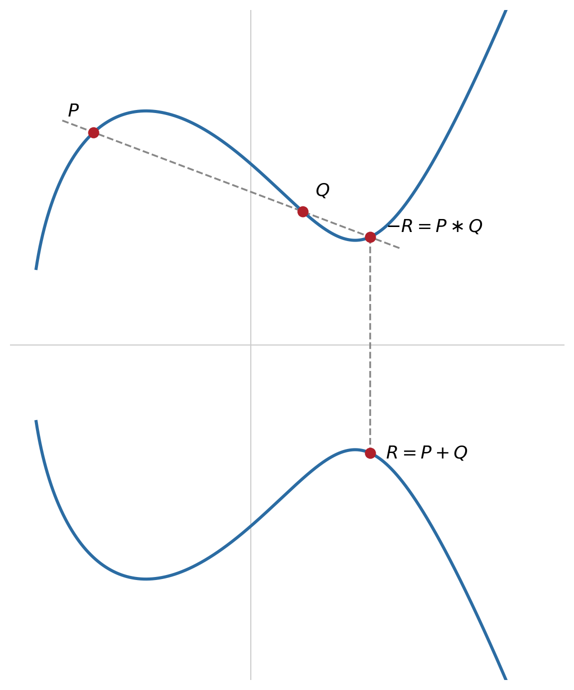

8 Elliptic Curve Cryptography
Introduction
RSA and Diffie-Hellman rest on two mathematical problems, integer factorisation and the discrete logarithm modulo a prime, for which subexponential attack algorithms exist, faster than pure brute force, even though they remain impractical for sufficiently large moduli (Stallings 2020). This forces ever-larger keys as computing power grows, typically 2048 to 4096 bits today (Section 6.5). Elliptic Curve Cryptography (ECC), proposed independently by Koblitz (Koblitz 1987) and Miller (Miller 1985), solves the same type of problem, key exchange and digital signatures, based on a different mathematical problem, for which no subexponential attack is known. The practical result is equivalent security with keys orders of magnitude smaller, a decisive advantage on devices with limited computational resources, such as mobile phones, smart cards, or Internet of Things sensors (Aumasson 2017).
8.1 Elliptic Curves over Finite Fields
An elliptic curve is the set of points \((x,y)\) satisfying an equation of the form:
\[y^2 = x^3 + ax + b\]
with \(a\) and \(b\) constants defining the curve, subject to the condition \(4a^3 + 27b^2 \neq 0\), which guarantees that the curve has no singularities (self-intersections or cusps) (Stallings 2020). For cryptographic use, the equation is not solved over the real numbers, but over a finite field \(\mathbb{Z}_p\), with \(p\) a large prime: the values of \(x\) and \(y\) are integers between \(0\) and \(p-1\), and all arithmetic (addition, multiplication, exponentiation) is performed modulo \(p\). The resulting set of points is finite, and one further special element is added to it, the point at infinity \(\mathcal{O}\), which acts as the identity element.
8.2 Point Addition: a Group Law
What makes an elliptic curve useful in cryptography is that its points, together with an appropriately defined addition operation, form an abelian group. The most intuitive definition of this addition is geometric, and it is worth visualising it over the real numbers before carrying it over to a finite field (Martin 2017):

Algebraically, to add \(P=(x_1,y_1)\) and \(Q=(x_2,y_2)\), with \(P \neq Q\), first compute the slope \(\lambda\) of the line through both:
\[\lambda = \frac{y_2 - y_1}{x_2 - x_1} \pmod p\]
and then the coordinates of the sum \(R=(x_3,y_3)\):
\[x_3 = \lambda^2 - x_1 - x_2 \pmod p \qquad\qquad y_3 = \lambda(x_1 - x_3) - y_1 \pmod p\]
To add a point to itself (doubling \(P\)), the slope of the tangent to the curve at \(P\) is used instead, \(\lambda = \frac{3x_1^2+a}{2y_1} \pmod p\), together with the same formulas for \(x_3\) and \(y_3\). The point at infinity \(\mathcal{O}\) behaves as the zero of this addition, \(P + \mathcal{O} = P\), and the symmetric of \(P=(x_1,y_1)\) is \(-P=(x_1,-y_1)\), with \(P + (-P) = \mathcal{O}\).
Why being an abelian group matters. Saying that \((E(\mathbb{Z}_p), +)\) is an abelian group means that point addition is closed (the sum of two points on the curve is always another point on the curve, never leaving the set), associative (\((P+Q)+R = P+(Q+R)\)), has an identity element (\(\mathcal{O}\)) and an inverse for every point, and is commutative (\(P+Q=Q+P\)). This is not an algebraic curiosity, it is the structural condition that makes the whole of Section 8.5 possible: the Diffie-Hellman protocol (Section 7.3) does not depend on anything specific to modular exponentiation, it only depends on the existence of an abelian group in which multiplying an element by a scalar is easy, but inverting that operation is hard (Stallings 2020). Commutativity, in particular, is what directly guarantees the central ECDH equality, \(d_A(d_B G) = d_B(d_A G)\): without it, Alice and Bob would simply not arrive at the same secret. Associativity, in turn, is what allows \(kP\) to be computed efficiently through successive doublings (Section 8.4), grouping the additions in whatever order is convenient without changing the final result.
8.3 Scalar Multiplication and the Elliptic Curve Discrete Logarithm Problem
The fundamental operation of elliptic curve cryptography is not the addition of two arbitrary points, but scalar multiplication: adding the same point \(P\) to itself \(k\) times, \(kP = P + P + \dots + P\). Just as the modular exponentiation of RSA and Diffie-Hellman is computed efficiently through successive squaring (Section 6.4), scalar multiplication is computed analogously, through successive doublings and additions, never requiring \(k\) individual additions.
The security of the entire construction rests on the Elliptic Curve Discrete Logarithm Problem (ECDLP): given \(P\) and \(Q=kP\), recover \(k\).
Why this operation is hard to invert. In the forward direction, computing \(Q=kP\) is fast: the double-and-add method (Section 8.4) obtains \(kP\) in about \(\log_2 k\) operations, taking advantage of the associativity of point addition. In the reverse direction, however, there is no equivalent of “dividing” \(Q\) by \(P\): scalar multiplication is not a multiplication in the usual algebraic sense, it is repeated addition within a group, and a group, by definition, only guarantees addition and additive inverses, never a division operation between its elements. There is, therefore, no direct algebraic manipulation capable of “undoing” \(kP\) and returning \(k\), unlike what would happen, for instance, when inverting ordinary multiplication.
An attacker is reduced to methods of search within the group. The best known generic attack, Pollard’s rho algorithm, has complexity \(O(\sqrt{n})\), where \(n\) is the order of the group of points (Stallings 2020; Aumasson 2017), essentially a clever randomised search that detects collisions between sequences of points generated from \(P\) and from \(Q\). But there is a much faster method, index calculus, which breaks the discrete logarithm modulo a prime and integer factorisation in subexponential time (the general number field sieve), precisely because it exploits the fact that integers decompose into small prime factors: any element of \(\mathbb{Z}_p^*\) can be re-expressed, with good probability, as a product of primes from a small “factor base”, which allows a system of equations to be assembled and solved much faster than an exhaustive search (Aumasson 2017). Points on an elliptic curve have no equivalent notion of decomposition into small factors: there is no natural “base of prime points” in which to express \(P\) and \(Q\), so index calculus simply does not apply to the ECDLP. It is this absence of extra structure, and not any mysterious property of the curves, that leaves the attacker with no better alternative than the generic \(O(\sqrt{n})\) search, and it is precisely this absence of mathematical shortcuts that allows ECC to offer the same level of security as RSA/DH with much smaller keys.
8.4 Comparing Key Sizes
The following table, based on NIST recommendations (Barker 2020; Stallings 2020), compares the key size required in RSA/Diffie-Hellman and in ECC to achieve the same level of security (measured in bits, equivalent to an exhaustive search over a symmetric key of that length):
| Security level (bits) | RSA / Diffie-Hellman | ECC |
|---|---|---|
| 80 | 1024 | 160 |
| 112 | 2048 | 224 |
| 128 | 3072 | 256 |
| 192 | 7680 | 384 |
| 256 | 15360 | 521 |
The gap widens rapidly: for a security level of 256 bits, RSA would require a key 30 times larger than ECC. Smaller keys mean not only less data to transmit and store, but also significantly faster signing and key-exchange operations, a decisive advantage in high-throughput TLS connections or on devices with limited computing capacity.
8.5 ECDH: Diffie-Hellman over an Elliptic Curve
ECDH (Elliptic Curve Diffie-Hellman) applies exactly the same logic as classical Diffie-Hellman (Section 7.1-7.3), replacing modular exponentiation with scalar multiplication of points. Alice and Bob publicly agree on a curve and a generator point \(G\), of large order \(n\). Alice chooses a secret integer \(d_A\) and computes \(Q_A = d_A \cdot G\); Bob chooses \(d_B\) and computes \(Q_B = d_B \cdot G\). They exchange \(Q_A\) and \(Q_B\) publicly, and each computes the shared secret:
\[K = d_A \cdot Q_B = d_A \cdot (d_B \cdot G) = (d_A d_B) \cdot G = d_B \cdot (d_A \cdot G) = d_B \cdot Q_A\]
The structure is identical to that of Figure 7.1 in the previous chapter: only the underlying mathematical operation changes, modular exponentiation in one case, scalar multiplication of points in the other. The difficulty of recovering \(d_A\) or \(d_B\) from \(Q_A\), \(Q_B\) and \(G\) is exactly the ECDLP of Section 8.3.
8.6 ECDSA and Curves Used in Practice
ECDSA (Elliptic Curve Digital Signature Algorithm) is, equivalently, the elliptic-curve version of DSA (Section 7.4-7.6): the signature is still a pair \((r,s)\), computed from a private key and a single-use ephemeral value, but \(r\) now derives from the \(x\)-coordinate of a scalar multiple of \(G\), instead of a modular exponentiation (Stallings 2020).
In practice, few curves are used across the generality of systems. P-256 (also called secp256r1), standardised by NIST, is the most widely used in TLS certificates and ECDSA signatures. Curve25519, designed by Daniel J. Bernstein (Bernstein 2006), the same author of Salsa20, ChaCha20 and Poly1305 (Chapter 4), and standardised in RFC 7748 (Langley, Hamburg, and Turner 2016), was built specifically to avoid entire classes of implementation errors, such as invalid-curve attacks or side-channel leaks related to execution time, and is today the reference curve for key exchange (X25519) in systems such as TLS 1.3, Signal, and SSH.
8.7 Chapter Summary
This chapter presented a structural alternative to RSA and Diffie-Hellman:
- An elliptic curve is the set of points satisfying \(y^2=x^3+ax+b\) over a finite field \(\mathbb{Z}_p\), plus a point at infinity \(\mathcal{O}\), which serves as the identity element
- The points of an elliptic curve form an abelian group under an addition operation defined geometrically (line and reflection, or tangent and reflection to double a point)
- The security of ECC rests on the ECDLP: given \(P\) and \(kP\), recovering \(k\) is hard, and the best known generic attack is \(O(\sqrt{n})\), with no known subexponential shortcut, unlike factorisation or the discrete logarithm modulo a prime
- ECC therefore achieves the same security level as RSA/DH with much smaller keys (256 bits in ECC ≈ 3072 bits in RSA, for 128 bits of security)
- ECDH and ECDSA directly replicate the Diffie-Hellman and DSA of the previous chapters, replacing modular exponentiation with scalar multiplication of points
- In practice, the P-256 curve and Curve25519 predominate, the latter designed by Bernstein to avoid classes of implementation errors common to other curves
8.8 Food for Thought
The best known generic attack against the ECDLP, Pollard’s rho algorithm, has complexity \(O(\sqrt{n})\), where \(n\) is the order of the curve’s group of points. Knowing this, and looking at Table 8.1, why does a curve with points of order \(n \approx 2^{256}\) correspond to a security level of 128 bits, and not 256?